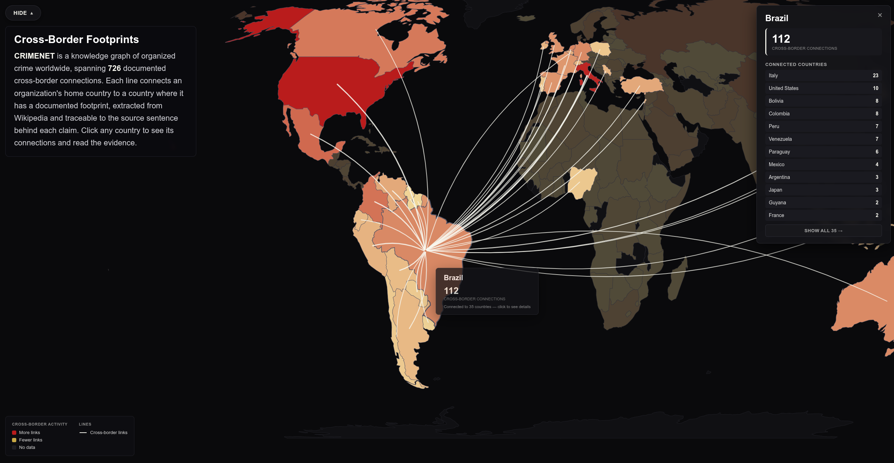

An AI assistant on global organized crime
A knowledge graph of global organized crime, with an AI you can ask about it.
 CRIMENET: 4,505 criminal organizations connected by 10,935 relationships across cooperation, conflict, and structural ties.
CRIMENET: 4,505 criminal organizations connected by 10,935 relationships across cooperation, conflict, and structural ties.
A few months ago, I created the first map of the world’s criminal organizations and how they connect to each other. I applied an LLM to read hundreds of Wikipedia articles, extracting every criminal organization mentioned and every relationship between them. The result was CRIMENET: the first open-source network of criminal organizations.
I have now significantly expanded it: 4,505 organizations and 10,935 relationships extracted from 1,418 Wikipedia articles1 across four languages. For each profiled organization2, the graph captures its description, country of origin, activity period, founding year, footprints in other countries, and defunct status. Every edge carries a verbatim evidence quote, a description, a versioned Wikipedia URL, and a time period when the source provides one. The three relationship types are cooperation, conflict, and other.
In this new version I also created an AI assistant that answers natural language questions by querying the graph. I will start there because it is the part I find most interesting.
CRIMENET AI

Answering questions such as “What is the most connected criminal organization?” or “How many communities does the global network of organized crime contain?” are just a matter of running a computation on the graph. However, answering questions such as “Which motorcycle clubs have direct ties to Italian mafia organizations?” or “What potential rivalries does the Sinaloa Cartel have based on shared adversaries?” require combining information from across the graph.
A standard LLM would guess at the answers because its training data has no catalog of criminal organizations. However, give it tools to query the graph and it can combine results and synthesize an answer. I built CRIMENET AI, a GraphRAG3 that works this way. The sections that follow walk you through the kinds of questions CRIMENET AI can answer.
Centrality
Some organizations are hubs. Others sit on the shortest paths between many pairs. I computed three centrality measures (degree, betweenness, and PageRank) across all 3,521 connected organizations. Here are the top 10 by betweenness.
Table 1: The top 10 organizations by betweenness centrality, with their degree and PageRank ranks across 3,521 connected organizations.
- What is the most important criminal organization in the global network?
- Which Mexican cartels have the most network influence?
- How does the Sinaloa Cartel's network importance compare to the American Mafia?
- How does Hezbollah rank across the three centrality measures?
- Which organizations rank highest in betweenness but not in degree?
Communities
Communities are groups of nodes more connected to each other than to the rest of the network. I ran a community algorithm4 on the cooperation graph and it returned 224 communities. Each is now named and described.
I fed each community’s member organizations, their descriptions, and their relationships to DeepSeek to generate a title and a summary. You can browse all communities with their full descriptions and member lists in the Community Browser (select the Communities tab). Here are the top 10.
Table 2: The top 10 communities by membership, titled and described by DeepSeek.
- What community does the Sinaloa Cartel belong to?
- Show me communities related to motorcycle clubs
- Find communities related to the mafia
- Which communities span the most countries?
- Compare the top five communities by size
Bridges
Some organizations cooperate across community boundaries. I call them bridges. Before CRIMENET, if someone asked “Which criminal organizations connect different communities?” the honest answer was: nobody knew. The question was too big to answer. Now it has an answer (incomplete, but an answer nonetheless): every bridging organization, ranked by how many communities it connects.
Table 3: The top 10 bridge organizations, ranked by cross-community cooperation edges.
- Which organizations bridge the most communities?
- How does the 'Ndrangheta's bridging role compare to the Camorra's?
- Which Mexican organizations bridge the most communities?
- What cross-community connections does the Sinaloa Cartel have?
- Which organizations bridge Latin American and European criminal networks?
Paths
A path connects two organizations through documented relationships. A direct edge is a path of length one. If no direct edge exists, the path might run through intermediaries. Each step carries its own evidence quote. The AI can search across all relationship types (cooperation and conflict), or restrict the path to cooperation only.
- Are the Yakuza and the Sicilian Mafia connected?
- Does the Sinaloa Cartel cooperate with the Sicilian Mafia?
- Who are the allies of allies of Mara Salvatrucha?
- Is there a cooperation-only route between the PCC and the Camorra?
- What is the shortest path between the Gulf Cartel and the 'Ndrangheta?
Hidden connections
The graph has 10,935 documented relationships drawn from the 1,418 articles I processed. However, most real-world connections are never written down at all. Others are documented elsewhere, outside Wikipedia.
A step towards filling this gap is to infer missing links from the structure of the graph itself. If two organizations share many of the same partners, or the same enemies, it is likely they have a relationship with each other, even if nobody has written it down. This is triadic closure. I computed three kinds of signal. Common cooperation partners: Friends of friends might be friends. Common adversaries: Enemies of enemies might be friends. Both: A pair that shares both cooperation partners and adversaries, so two independent structural patterns point to the same missing relationship.5
I computed all three across the entire graph. The result is 2,561 candidate pairs, each scored by how many common partners and adversaries they share. Every pair is listed in the Triadic Signals tab, with the actual names of the shared partner and adversary organizations, signal types, and scores. Table 4 shows some examples of each kind of signal.
Table 4: The strongest signals for each type, scored by weighted common partners and adversaries.
A Both signal draws on two independent structural patterns converging on the same missing relationship. The Gambino and Rizzuto crime families, for example, share 4 cooperation partners and 1 adversary with no direct edge between them. The highest partner counts come from single-metric pairs. The Cleveland and Patriarca families share 8 cooperation partners (Bufalino, Chicago Outfit, DeCavalcante, Detroit Partnership, Gambino, Genovese, Hells Angels, and Los Angeles crime family) and no direct edge between them. ‘Ndrina Pesce and Commisso ‘ndrina also share 8 partners, seven fellow Calabrian clans plus the Gulf Cartel. Two ‘ndrine from different towns connected through a dense web of shared allies. Other signals come purely from shared enemies. Nuestra Familia and the Texas Syndicate share three adversaries (Aryan Brotherhood, Mexican Mafia, Mexikanemi): prison gangs united by shared enemies rather than shared allies.
- What undocumented alliances might exist between the 'Ndrangheta and other organizations?
- Which Canadian organizations might have undocumented alliances, indicated by shared partners and adversaries?
- What potential rivalries does the Sinaloa Cartel have based on shared adversaries?
- Are there potential connections between Mexican cartels and European mafia groups?
- Which pairs have the strongest signal from shared enemies?
Countries
Each profiled organization carries its country of origin. Beyond that, every organization accumulates a set of country footprints (countries where one or more Wikipedia articles document its presence). Here are the top 10 countries by how many organizations are based there.
Table 5: The 10 countries where the most criminal organizations are based.
You can also see the footprints directly on a world map. Each organization’s country of origin and its documented footprints create arcs across the map.

- What criminal organizations operate in Brazil?
- Which countries does the 'Ndrangheta have a footprint in?
- Which criminal organizations operate in both Colombia and Venezuela?
- Compare organized crime in Mexico and Colombia
Building the graph
The raw material is 1,418 manually curated Wikipedia articles about criminal organizations across English, Italian, Portuguese, and Spanish Wikipedia. The extraction pipeline fetches each article, cleans the HTML into plain text, then sends it to DeepSeek to identify organizations and the relationships between them: cooperation, conflict, and other.6 The pipeline then profiles each organization from its own Wikipedia article (canonical name, aliases, description, country of origin, time period, founded and dissolved years, defunct status, and country footprints, each backed by a verbatim evidence quote) and merges everything into a single graph, folding variant names across languages so the Sinaloa Cartel and the Cártel de Sinaloa become one node.
An LLM extraction pipeline produces errors: it conflates names, misses duplicates, invents edges between orgs that were merely mentioned in the same paragraph, and sometimes pulls in non-criminal entities. In order to fix these problems, I built an audit pipeline that targets each class of error, one audit per error type.7 The correction loop is designed to be iterative: spot an error, add one line to a corrections file, re-run the apply step. Manual overrides always win over auto-suggestions. Every detail is documented on GitHub.

CRIMENET’s home page is a dashboard with two panels where you can browse all organizations. The connection finder lets you pick any two organizations and see exactly how they relate. The other tabs cover communities, bridges, and triadic signals.
Closing thoughts
There is, to my knowledge, no larger directory of criminal organizations anywhere. Wikipedia’s most extensive list of criminal enterprises, gangs, and syndicates covers a few hundred groups. And it only mentions organizations, not their relationships. CRIMENET is by far the most complete catalog of this kind: nearly 5,000 organizations mapped across nearly 11,000 relationships, each backed by a specific Wikipedia source.
This was an accidental achievement. The goal was to build a knowledge graph of how criminal organizations relate to each other, not to catalog every group mentioned on Wikipedia. But because the pipeline reads nearly 1,500 articles across four languages and extracts every organization mentioned in each one, it ended up capturing the vast majority of criminal organizations documented on English, Italian, Portuguese, and Spanish Wikipedia.

Limitations
CRIMENET inherits the biases of its source and the boundaries of its scope:
- Wikipedia coverage skews toward English-language and Western sources. The pipeline processes four languages (English, Italian, Portuguese, and Spanish), which is better than one but still leaves gaps. Because the data comes from Wikipedia, the graph inherits the biases and gaps of its source material.
- Relationships are aggregated across time. Every edge carries its own time period, so the data is there, but the graph view flattens time into a single snapshot.
- The current graph models organizations and their relationships, not individuals or cyber criminal groups. This means we lose some information about criminal organizations built around a single person.
- CRIMENET AI will not work for long, at least publicly. It is spending my personal tokens so once my balance hits zero I will not recharge it.
None of this is fatal. The architecture is designed for iteration: add more languages, widen the scope, promote individuals to nodes.
If you have questions or ideas, get in touch.
-
Most of these articles are about criminal organizations themselves. The rest cover: individual criminals, events, law enforcement agencies, and other topics that mention criminal groups but are not about a specific organization. ↩︎
-
Of the 4,505 organizations, 1,032 are profiled from their own Wikipedia article (with full descriptions, aliases, country of origin, country footprints, time periods, and defunct status), 3,473 are mention-only (they appear in other orgs' articles but have no dedicated Wikipedia page). 3,521 organizations (78%) are connected to at least one other; 984 (22%) are isolated. ↩︎
-
GraphRAG stands for Graph Retrieval-Augmented Generation. A standard RAG system retrieves text chunks and asks the model to reason over them. A GraphRAG system retrieves structured data from a knowledge graph by calling tools that traverse nodes, edges, communities, and paths. I gave it 13 tools: functions that look up organizations, find connections, search by country, trace paths. The model decides which function to call, the code runs it against static data files, and the results feed back to the model, which can call another function or synthesize an answer. Every Wikipedia URL and edge from the tool results is collected and appended below the answer as Sources and Evidence. The tools are documented in the GitHub repository. ↩︎
-
The algorithm is Infomap, which finds communities by detecting where random walks tend to stay. ↩︎
-
Common cooperation partners: two organizations that share at least 3 cooperation partners but have no direct edge between them. Common adversaries: two organizations that share at least 2 common adversaries but have no direct edge between them. The “Both” signal requires both conditions simultaneously. ↩︎
-
Cooperation covers alliances, joint operations, and commercial dealings. Conflict covers fighting, war, and clashes. Other covers structural ties (sub-units, splinters), truces, and unspecified links. The pipeline proceeds in five steps: (0) resolve Wikipedia URLs to versioned URLs; (1) fetch HTML and extract clean body text with infobox tables; (2) send text to DeepSeek to extract organizations and relationships; (3) DeepSeek enriches each profiled organization with description, aliases, country, time period, defunct status, and country footprints; (4) merge all fragments, auto-dedup, attach profiles, and normalize country names. Full details in the GitHub repository. ↩︎
-
Seven steps in total. Audits 0 through 5 find wrong merges, missed merges, spurious edges, unsupported country links, umbrella terms, and non-criminal entities. Audit 6 provides an LLM second opinion that can veto identity corrections. Audit 7 applies all corrections, with manual overrides from a curated file always winning over auto-suggestions. Full details in the GitHub repository. ↩︎